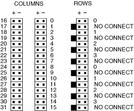
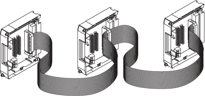

Expanding the NI PXI/PXIe-2529 Matrix Using the NI TB-2634
The NI TB-2634 ships with three 2×16 ribbon cable connectors. You will need to supply and attach your own ribbon cables.
Getting Started
To expand the NI PXI/PXIe-2529 (NI 2529), you need the following items:
- Ribbon cable connectors
- Ribbon cable
- Two or more NI TB-2634 terminal blocks
- Two or more NI 2529 switch modules
NI TB-2634 Terminal Reference
Refer to the following figure and complete the procedures in either the Expanding the NI 2529 Columns or Expanding the NI 2529 Rows section to expand the NI 2529.

Complete the following steps to expand the columns of an NI 2529 using an NI TB-2634 terminal block.
- Connect one end of the ribbon cable to the row ribbon cable header on one NI TB-2634.
- Connect the ribbon cable to the row ribbon cable header on another NI TB-2634.
- (Optional) To expand the columns on the NI 2529 further, attach another connector to the ribbon cable, and repeat the previous step.
The following figure illustrates the NI TB-2634 connections necessary to create a 2-wire 4×96 matrix.

Complete the following steps to expand the rows of an NI 2529 using an NI TB-2634 terminal block.
- Connect one end of the ribbon cable to the first column ribbon cable header on one NI TB-2634.
- Connect the ribbon cable to the first column ribbon cable header on another NI TB-2634.
- (Optional) To expand the rows on the NI 2529 further, attach another connector to the ribbon cable, and repeat the previous step.
- Repeat the previous steps to connect the second column ribbon cable headers on the NI TB-2634 terminal blocks.